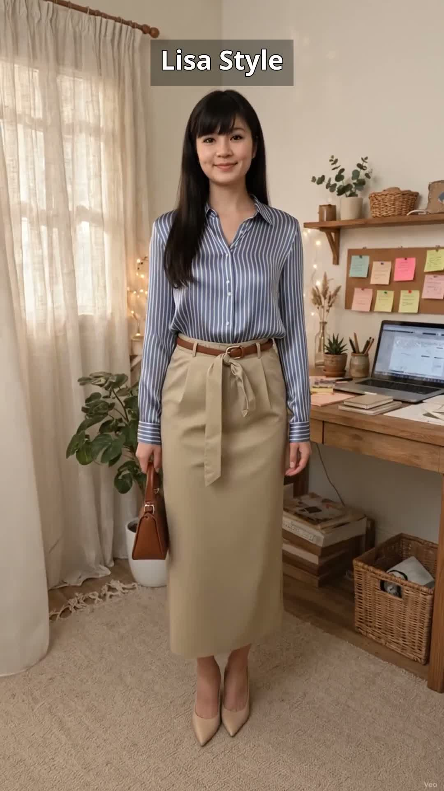

13/11/2026 · Outfit đi làm
Set sọc lụa + chân váy kaki dài: gọn dáng mà vẫn trẻ trung
Sáng đi làm, Lisa phối set sọc này trong 3 phút: áo sơ mi sọc xanh trắng dài tay vải lụa, chân váy kaki dáng dài màu be kèm đai thắt eo màu nâu, giày cao gót nude và túi nhỏ nâu. Bài viết này gợi ý vì sao sọc dọc kéo dáng dài ra, cách thắt đai gọn eo, ai hợp với set này, ai nên cân nhắc, và vài mẹo phối nhanh trong 3 phút.